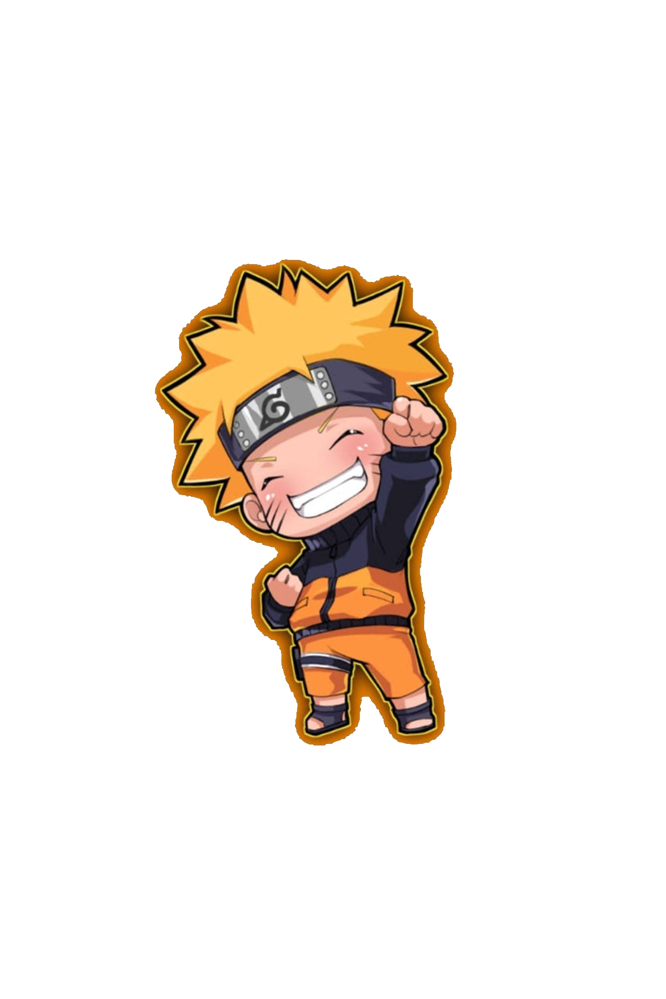

Hey this is Minato i am narutos father.Minato Namikaze, known as the "Fourth Hokage" in the popular anime and manga series Naruto, is revered as a legendary figure in the fictional world of the Naruto universe. Regarded as a prodigious and exceptionally skilled ninja, Minato is celebrated for his extraordinary intellect, unparalleled speed, and mastery of the renowned "Flying Thunder God Technique." Despite his premature death during a critical battle to protect the village from the Nine-Tailed Fox, his legacy endures as a symbol of unwavering dedication and sacrifice for the people of Konoha.
Hey this is Kushina i am naruto mother.Kushina Uzumaki, a pivotal character in the renowned anime and manga series Naruto, is depicted as a spirited and fiercely determined kunoichi. Hailing from the former Uzushiogakure, known for its powerful sealing techniques, Kushina possesses incredible chakra control and proficiency in the use of the Adamantine Sealing Chains. Her vibrant personality is complemented by her unwavering loyalty and love for her friends and family.Kushina's influence on her son's life is profound, instilling in him a resilient spirit and an unwavering determination to never give up, no matter the odds
Hey this is Jiraiyi.Widely recognized for his exceptional skills in both ninjutsu and sage jutsu, Jiraiya is depicted as a wise, eccentric, and perceptive mentor to the series' protagonist, Naruto Uzumaki. Despite his playful demeanor and love for adult literature, Jiraiya is a highly respected and powerful ninja, known for his mastery of various powerful techniques, including the Rasengan.